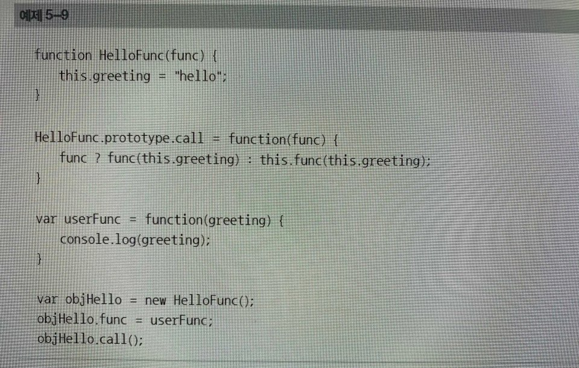
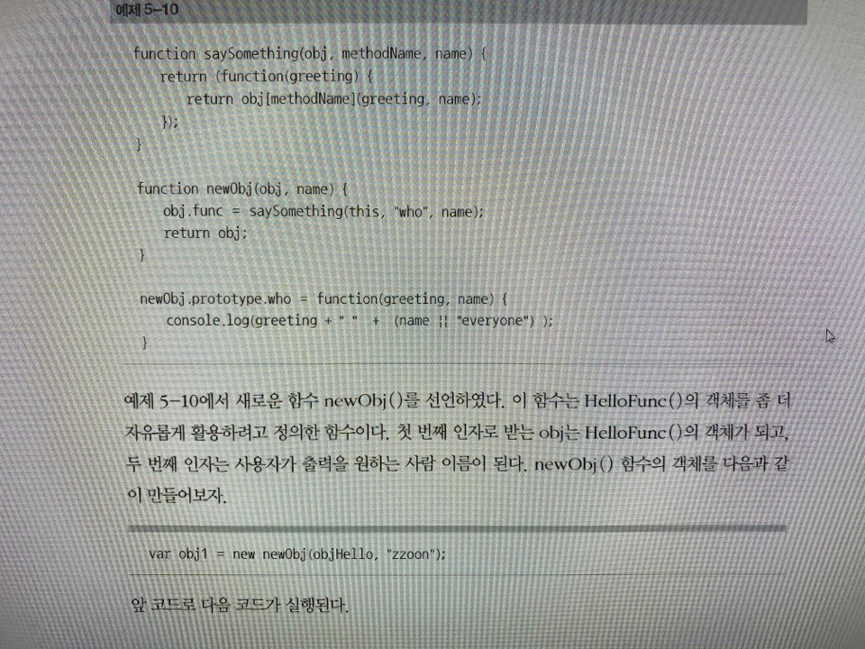

클로저의 활용
클로저의 개념을 이해했다면, 이제 이 클로저를 어떻게 활용할 것인지 고민해야 한다. 앞에서 설명 했듯이, 클로저는 성능적인 면과 자원적인 면에서 약간 손해를 볼 수 있으므로 무차별적으로 사용해서는 안 된다. 사실 클로저를 잘 활용하려면 경험이 가장 중요하게 작용한다. 여기서는 아주 전형적인 클로저의 예제 코드를 소개할 텐데, 어느 정도 클로저의 감각만이라도 얻어갈 수 있기를 바란다. 그리고 7장 함수형 프로그래밍에서 소개할 대부분의 예제가 클로저를 활용한 것이므로 참고하길 바란다. 하지만 진정 좋은 자바스크립트 프로그래머가 되려면 많은 개발 경험을 쌓는 것이 가장 좋은 방법이다.

함수 HelloFunc는 greeting 변수가 있고, func 프로퍼티로 참조되는 함수를 call() 함수로 호출한다. 사용자는 func 프로퍼티에 자신이 정의한 함수를 참조시켜 호출할 수 있다. 다만, HelloFunc.prototype.call()을 보면 알 수 있듯이 자신의 지역 변수인 greeting만을 인자로 사용자가 정의한 함수에 넘긴다. 앞 예제에서 사용자는 userFunc() 함수를 정의하여 objHello.func()에 참조시킨 뒤, HelloFunc()의 지역 변수인 greeting을 화면에 출력시킨다. 앞 코드를 실행시키면 결과는 다음과 같다. [출력결과] # hello 이 예제에서 HelloFunc()는 greeting만을 인자로 넣어 사용자가 인자로 넘긴 함수를 실행시킨다. 그래서 사용자가 정의한 함수도 한 개의 인자를 받는 함수를 정의할 수 밖에 없다. 여기서 사용자가 원하는 인자를 더 넣어서 HelloFunc()를 이용하여 호출하려면 어떻게 해야할까? 다음 코드를 이어서 보자.

예제 5-10에서 새로운 함수 newObj()를 선언하였다. 이 함수는 HelloFunc()의 객체를 좀 더 자유롭게 활용하려고 정의한 함수이다. 첫 번째 인자로 받는 obj는 HelloFunc()의 객체가 되고, 두 번째 인자는 사용자가 출력을 원하는 사람 이름이 된다. newObj() 함수의 객체를 다음과 같이 만들어 보자. ====================================== var obj1 = new Obj(objHello, "zzoon"); ====================================== 앞 코드로 다음 코드가 실행된다. obj.func = saySomething(this, "who", name); return obj; 첫 번째 인자 obj의 func 프로퍼티에 saySomething()함수에서 반환되는 함수를 참조하고, 반환한다. 결국 obj1은 인자로 넘겼던 objHello 객체에서 func 프로퍼티에 참조된 함수만 바뀐 객체가 된다. 따라서 다음과 같이 호출할 수 있다. ======================================== obj1.call(); ======================================== 이 코드의 실행결과, newObj.prototype.who 함수가 호출되어 사용자가 원하는 결과인 "hello zzoon"을 출력한다. 그렇다면 saySomething() 함수안에서 어떤 작업이 수행되는지 살펴보자. ================================================ function saySomething(obj, methodName, name){ return (function(greeting){ return obj[methodName](greeting, name); }); } ================================================ * 첫 번째 인자: newObj 객체 - obj1 * 두 번째 인자: 사용자가 정의한 메서드 이름 - "who" * 세 번째 인자: 사용자가 원하는 사람 이름 값 - "zzoon" * 반환: 사용자가 정의한 newObj.prototype.who() 함수를 반환하는 helloFunc()의 func()함수 이렇게 반환되는 함수가 HelloFunc이 원하는 function(greeting) {} 형식의 함수가 되는데, 이것이 HelloFunc 객체의 func로 참조된다. obj1.call()로 실행되는 것은 실질적으로 newObj.prototype.who()가 된다. 이와 같은 방식으로 사용자는 자신의 객체 메서드인 who 함수를 HelloFunc에 연결시킬 수 있다. 여기서 클로저는 saySomething()에서 반환되는 function(greeting) {}이 되고, 이 클로저는 자유변수 obj, methodName, name을 참조한다. 앞 예제는 정해진 형식의 함수를 콜백해주는 라이브러리가 있을 경우, 그 정해진 형식과는 다른 형식의 사용자 정의 함수(위 예제에서는 newObj.prototype.Who메서드)를 호출할 때 사용된다. 예를 들어 브라우저에서는 onclick, onmouseover와 같은 프로퍼티에 해당 이벤트 핸들러를 사용자가 정의해 놓을 수가 있는데, 이 이벤트 핸들러의 형식은 function(event) {} 이다. 이를 통해 브라우저는 발생한 이벤트를 event인자로 사용자에게 넘겨주는 방식이다. 여기에 event 외의 원하는 인자를 더 추가한 이벤트 핸들러를 사용하고 싶을 때, 앞과 같은 방식으로 클로저를 활용해줄 수 있다.